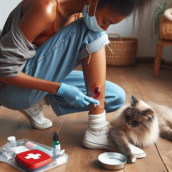
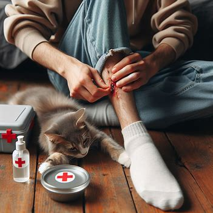
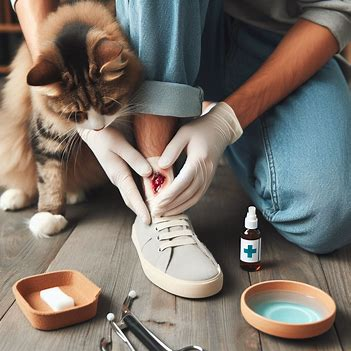

Animal Bite First Aid
Animal Bite
- Wash the wound thoroughly with soap and water for at least 5 minutes.
- Apply an antiseptic solution or cream to the wound to prevent infection.
- Cover the wound with a clean bandage or gauze pad to protect it from dirt and further injury.
- Elevate the injured area if possible to reduce swelling.
- Apply a cold compress or ice pack wrapped in a cloth to reduce pain and swelling.
- Seek medical attention promptly, especially if the wound is deep, bleeding heavily, or shows signs of infection.



For more information, click here.